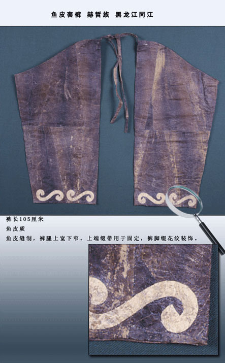
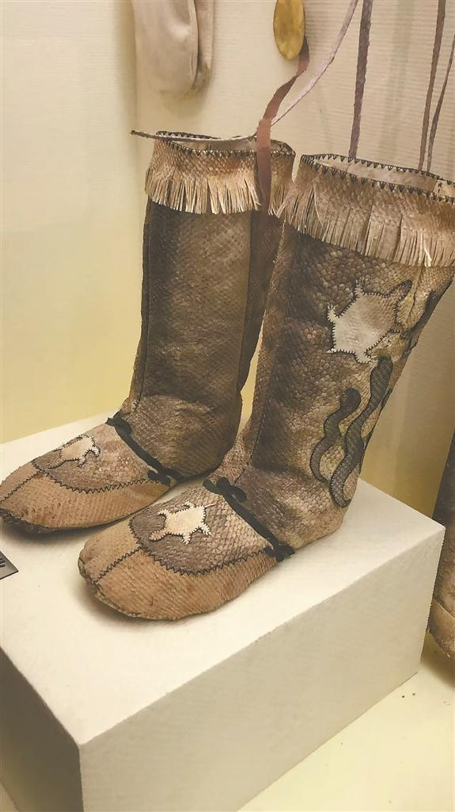
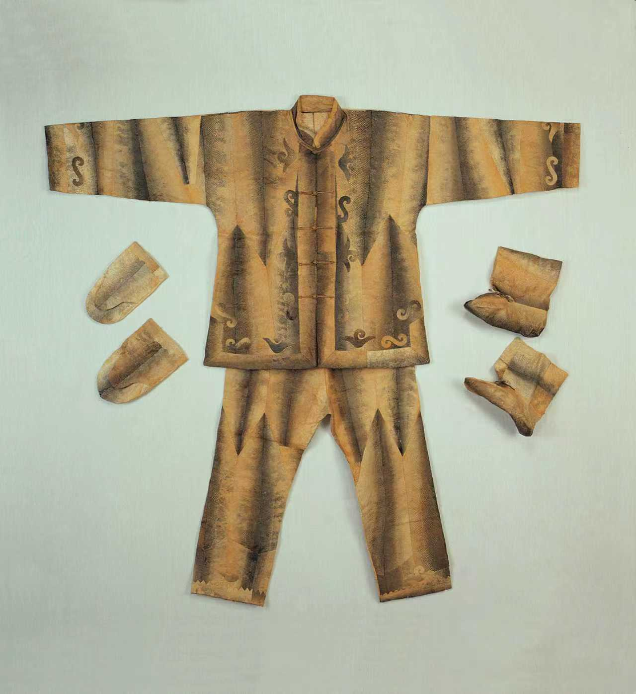
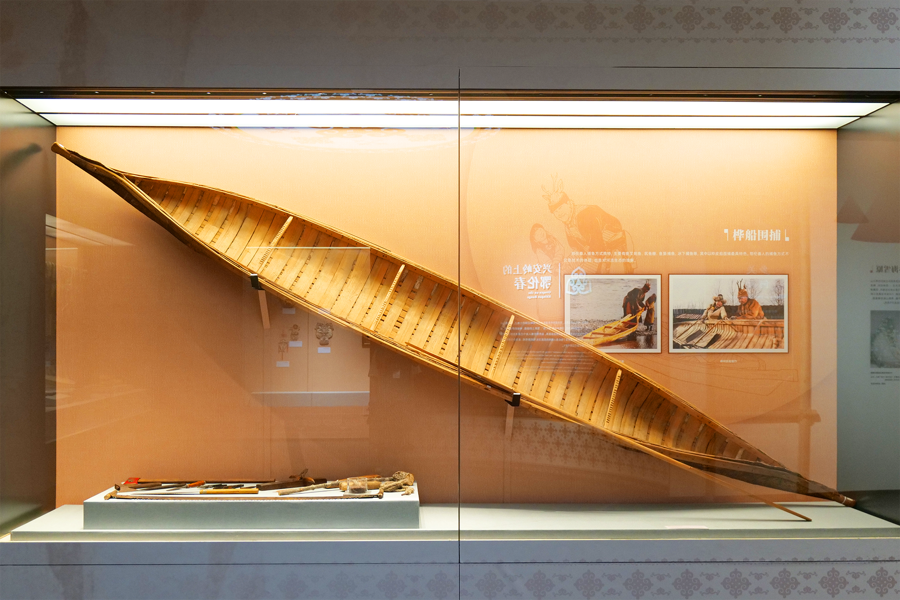
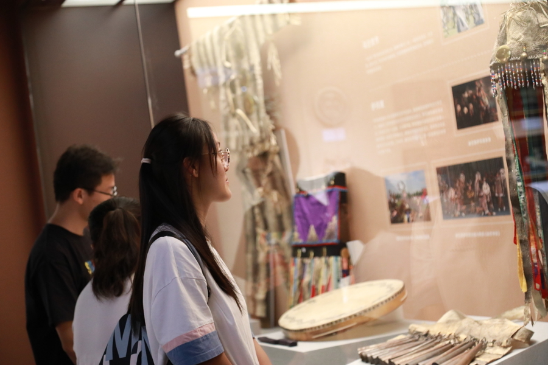

实物资料 · 纹样与形制
云卷纹鱼皮套裤
公开资料标注这件鱼皮套裤裤长 105 厘米。两片筒状鱼皮在下缘以浅色 S 形纹收束，局部放大图同时呈现纹样、材料表面与边缘缝制关系，为前述“套裤”章节提供可核对的实物依据。
历史传承墙
以下展陈依据博物馆现场实拍、馆藏图像及公开机构原图整理。图像与说明按来源并置，作为前述数字展廊的历史与实物参照。

实物资料 · 纹样与形制
公开资料标注这件鱼皮套裤裤长 105 厘米。两片筒状鱼皮在下缘以浅色 S 形纹收束，局部放大图同时呈现纹样、材料表面与边缘缝制关系，为前述“套裤”章节提供可核对的实物依据。

专题图像 · 传统靴履
展柜中的高帮靴履保留了材料鳞理、拼缝、绑带和浅色纹饰。现场视角清楚显示靴筒与鞋面的结构关系，也让“靰鞡”从数字展廊中的造型，回到真实陈列环境中的尺度与工艺细节。

博物馆现场 · 成套服饰
“星汉璀璨·民博藏珍”中华民族文物展中的鱼皮服饰展柜，将上衣、长裤、手套与靴履成套并置。完整陈列可直观看到鱼皮拼片、深浅色带和边缘纹样如何分布在不同部位，是前述“乌提库”与“套裤”章节的重要实物参照。

博物馆现场 · 渔文化器物
中国航海博物馆“千舸水上来”中国少数民族渔文化特展中的舟具与制作工具展柜，把器物放回捕鱼与水域生产的生活系统。鱼皮服饰并非孤立的装饰品，而与取材、加工、行舟和寒地生活共同构成一套材料知识。

展览现场 · 公共传播
同一特展的观看现场，将服饰、鼓具、生产工具和图文档案组织进公共叙事。观众与实物之间的距离，记录了鱼皮技艺从生活实践、馆藏研究到公共教育的传播路径，也构成这面历史传承墙的终点。